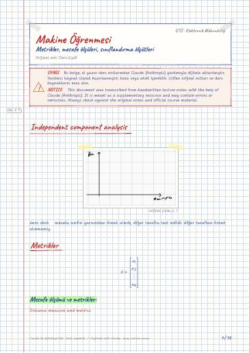

Makine Öğrenmesinin Temelleri · Dijital ders notu
Metrikler, mesafe ölçüleri, sınıflandırma ölçütleri
- Ders
- Makine Öğrenmesinin Temelleri (ELM472)
- Dönem
- 7. Dönem · 2024–2025 Güz
- Biçim
- PDF · 12 sayfa · 0,3 MB · el yazısı görünümlü LaTeX
- Orijinal not
- Ders-2.pdf

The digital notes were created from the handwritten notes with the help of Claude (Anthropic); they are meant as a supplementary resource and may contain errors. Always rely on the original notes and the official course materials.
Bu notta neler var?
- Independent component analysis
- Metrikler
- Mesafe ölçümü ve metrikler
- Metrik
- KL-Divergence
- Jenson-Shannon div
- Continuos için
- Cross-Entropy
- Küme Metrikleri
- Sınıflandırma metrikleri
- Doğruluk (Acc)
- Confusion matrix
Notun metni
Düz metin olarak göster (formüller ve çizimler yoktur)
Independent component analysis
zero shot mesela sınıfın yarısından örnek alındı, diğer tarafta test edildi. diğer taraftan örnek alınmamış.
Mesafe ölçümü ve metrikler:
Distance measure and metrics
Negatif olmama: d(x) ≥ 0 Claude notu: muhtemelen d(x,y)≥ 0 olmalı.
Divergence: (Bu metrik değil ama o da mesafe ölçer) birisi diğerine daha uzak mı onu ölçüyor.
Tüm metrik özelliklerini sağlamazlar
_1 -norm: Manhattan norm
_p -norma göre birim çemberler
→ Loss functionlarda normlar kullanılıyor
Okuma alışkanlığını şehirlere göre
burada sıkıntı ne
mesela nüfusa bölebiliriz
Ama ben olasılık dağılımı üzerinden gitmek istiyorum
bir kez izmir ankara
bir kez izmir antep
Ama bu metrik değil
simetrik değil d(x,y)≠ d(y,x) her zaman
Jenson-Shannon div
Ne kadar çok kaos varsa entropi o kadar yükselir.
P ile Q'nun birbirine uzaklığı
Bir haber başkasına benziyor mu
Iğdır'da trafik kazasından 10 kişi öldü
ığdır trafik kaza 10 kişi ölmek
ığdır avokada getirmek
Hamming Distance Bütün veriler tek (set())
0'ı eşik değer yaparsam